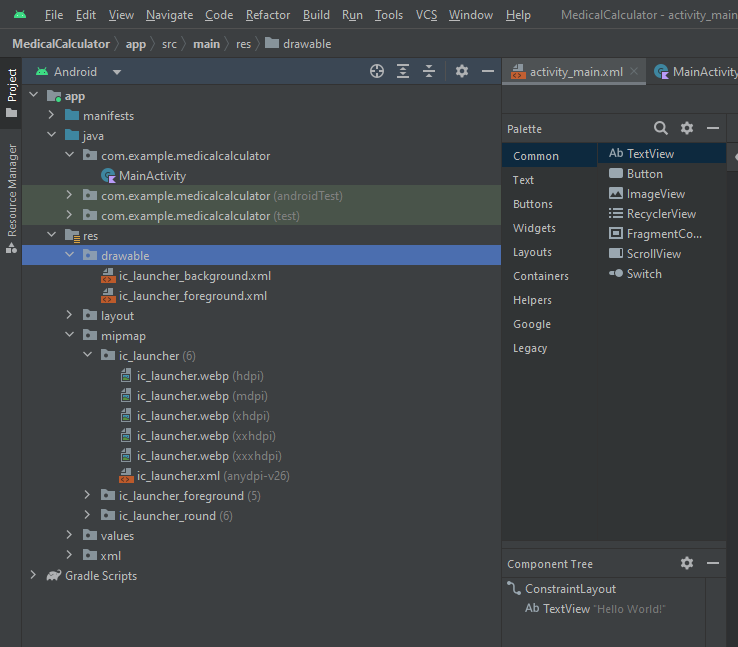

Lab 7 Android App using Icons and Decision Making Controls
1. Medical Calculator App
You will need to download the following picture folder -> Lab_7_Picture.zip
Start a new Android Studio Project and name it the Application Medical Calculator. Copy the file ic_launcher_weight.png from the Pictures folder you have downloaded above.
Customizing a Launcher Icon
- Step 1:
- In the Android Project View, click the
activity_main.xmlfile. - Click File on the menu bar and then click New. From the drop down list choose Image Asset. The Asset Studio dialog box opens to display the default launcher icons for the resolutions of various devices.
- In the Android Project View, click the

- Step 2:
- In the Path: field (in the red square in the picture above) click on the folder icon to the very end of the field and navigate to the location of
ic_launcher_weight.pngfile, and then select the file as shown on the picture below. Note that the path on your PC will be different from the path shown as this is where the file is saved on my laptop.
- In the Path: field (in the red square in the picture above) click on the folder icon to the very end of the field and navigate to the location of

- Click the Ok button. The following dialog window will appear:

- Click the Next button and on the following window that appears, click the Finish button to add the custom launcher icon. The custom icons will be displayed in
res/mipmapfolder. Expand theres/mipmapfolder and check that the icon is there as expected. The result is shown below:

Displaying the Action Bar Icon Using Code
Step 1:
- In the Android project view, expand the java folder and the first sub-folder, and then double click on the
MainActivityto open the code window. - Click at the end of
setContentViewline, press Enter and type the following three statements to display the logo in the Action bar:
supportActionBar?.setDisplayShowCustomEnabled(true)
supportActionBar?.setLogo(R.mipmap.ic_launcher_foreground)
supportActionBar?.setDisplayShowTitleEnabled(true)
supportActionBar?.setDisplayUseLogoEnabled(true)
- The result is shown below:
-
package com.example.medicalcalculator;
import androidx.appcompat.app.AppCompatActivity;
import android.os.Bundle;
override fun onCreate(savedInstanceState: Bundle?) {
super.onCreate(savedInstanceState)
setContentView(R.layout.activity_main)
supportActionBar?.setDisplayShowCustomEnabled(true)
supportActionBar?.setLogo(R.mipmap.ic_launcher_foreground)
supportActionBar?.setDisplayShowTitleEnabled(true)
supportActionBar?.setDisplayUseLogoEnabled(true)ayShowUseLogoEnabled(true)
}
}
Run the app. The icon is displayed in the running emulator acting bar as shown below:

String Table
Step 1:
- In the Android project view, open the stirngs.xml file in the res\values folder.
- Click the Open editor link and then the Add Key (+ sign) button in the Translations Editor.
- Enter the following values shown in the table below:
| String Name | String Value |
|---|---|
| txtTitle | Convert Patient Weight |
| txtWeight | Weight of Patient |
| radLbToKilo | Convert Pounds to |
| radKiloToLb | Convert Kilograms to |
| btnConvert | Convert Weight |
- Click the Save All button on the toolbar and then close the Translators Editor tab and the
strings.xmltab.
Creating the GUI in the Emulator
Step 1:
- With the
activity_main.xmlopen and displaying the emulator screen, from the Widgets category of the Palette, drag and drop theTextViewcontrol onto the top part of the emulator. Centre it (drag it till a dashed vertical line appears). - Click the vertical bar next to the text attribute of the
TextViewcontrol in the Attribute Pane and in the Pick a Resource dialog choose thetxtTitlebox. Press OK. - Change the
textSizeproperty to30sp. - Click the vertical bar next to the
textColorproperty. In the Pick a Resource dialog box that appears in the Color section scroll down in android and chooseholo_red_darkcolour to change the text colour to red to match the launcher icon. Click the OK button. - Right click on the
TextViewcontrol, choose Center/ Horizontally to centre the control.
Step 2:
- From the Text category in the Palette, drag and drop the
Numbercontrol onto the emulator below theTextViewcontrol in the centre. - Click on the vertical bar next to the
hintproperty in the Property pane. - Choose
txtWeightfrom the Resources dialog and then click the OK button. - Change the
textSizeproperty to24sp.
Step 3:
- In the Buttons category of the Palette, select
RadioGroup, and then drag and drop theRadioGroupcontrol onto the user interface below theNumbercontrol. Expand the size of theRadioGroupto place radio buttons inside. - Click the
RadioButtoncontrol, drag and drop two radio buttons inside theRadioGroupcontrol, and centre them using the dashed line. - Click the vertical bar next to the
textattribute of the firstRadioButtoncontrol in the Attribute Pane and in the Pick a Resource dialog choose theradKiloToLbbox. Press OK. - In the Attributes list for the first
RadioButton, click on the checked property indicating that the first radio button is the default selection. - Change the
textSizeproperty to18spfrom the drop down list. - Click the vertical bar next to the
textattribute of the secondRadioButtoncontrol in the Attribute Pane and in the Pick a Resource dialog choose theradLbToKilobox. Press OK. - Change the
textSizeproperty to18spfrom the drop-down list.
Step 4:
- Drag the
Buttoncontrol from the Palette to the emulator below theRadioGroup. - Click the vertical bar next to the
textattribute of theButtoncontrol in the Attribute Pane and in the Pick a Resource dialog choose thebtnConvertbox. Press OK. - Change the
textSizeproperty to24spform the drop-down list. - Click the vertical bar next to the
textColorproperty. In the Pick a Resource dialog box that appears in theColorsection scroll down in android and chooseholo_red_darkcolour to change the text colour to red to match the launcher icon. Click the OK button.
Step 5:
- From the Common category in the Palette, drag another
TextViewcontrol to the emulator below theButton. - In the
textattribute box deleteTextView. Thetextattribute is now empty and theTextViewcomponent you just dragged to the emulator has no label. - Change the
textSizeproperty to24sp. - Click the vertical bar next to the
textColorproperty. In the Pick a Resource dialog box that appears in theColorsection scroll down in android and chooseholo_red_darkcolour to change the text colour to red to match the launcher icon. Click the OK button. - Click Save All button on the Standard toolbar.
Now Apply Constraints to the layout using the Infer Constraints button above the emulator and run the app in the emulator to see if you have correctly placed all the controls. The result should look similar to this:

Coding a Radio Button Control
Step 1:
- Click on the
MainActivity.kttab. - Click at the end of line (just after
{)
override fun onCreate(savedInstanceState: Bundle?) {
and then press Tab to indent the line.
- To initialize the conversion rate value of 2.2., type:
val conversionRate : Double = 2.2
and press Enter.
- To initialize the weightEntered variable and the convertedWeight, type:
var weightEntered : Double = 0.0
var convertedWeight : Double = 0.0
and press Enter.
Step 2:
- Click at the end of the line
getSupportActionBar().setDisplayUseLogoEnabled(true);
and press Enter.
- to instantiate and reference the
EditTextclass:
val weight = findViewById<EditText>(R.id.editTextNumer)
Press Enter.
- To instantiate and reference the two radio buttons, type:
val kiloToLb = findViewById<RadioButton>(R.id.radiobutton)
val lbToKilo = findViewById<RadioButton>(R.id.radiobutton2)
- Save your work.
Coding the Button Control
Step 1:
- After the two lines of code referring to the radio buttons, type:
val result = findViewById<TextView>(R.id.textView2)
and press Enter.
- To code the button, type:
val convert = findViewById<Button>(R.id.button)
and press Enter.
- Your
MainActivity.ktclass should look like this:
class MainActivity : AppCompatActivity() {
val conversionRate : Double = 2.2
var weightEntered : Double = 0.0
var convertedWeight : Double = 0.0
override fun onCreate(savedInstanceState: Bundle?) {
super.onCreate(savedInstanceState)
setContentView(R.layout.activity_main)
supportActionBar?.setDisplayShowCustomEnabled(true)
supportActionBar?.setLogo(R.mipmap.ic_launcher_foreground)
supportActionBar?.setDisplayShowTitleEnabled(true)
supportActionBar?.setDisplayUseLogoEnabled(true)
val kiloToLb = findViewById<RadioButton>(R.id.radiobutton)
val lbToKilo = findViewById<RadioButton>(R.id.radiobutton2)
val weight = findViewById<EditText>(R.id.editTextNumer)
val result = findViewById<TextView>(R.id.textView2)
val convert = findViewById<Button>(R.id.button)
}
}
- To code the
Buttonlistener, typeconvert.setOnClickListener{}.
Coding the Button Event
Step 1:
- Inside the OnClick method stub of the MainActivity.java code, type to convert the weight entered to a Double data type and press Enter.
weightEntered = weight.getText().toString().toDouble()
- To create a decimal layout that changes the weight to a decimal rounded to the nearest tenth for use in the result later in the code, type:
val tenth : DecimalFormat = DecimalFormat("#.#")
There are two Decimal formats to choose from in the autocomplete drop down list. Make sure if you do choose from the drop-down list to select
DecimalFormat (java.text)and NOTDecimalFormat(android.icu.text)
Coding the Nested If Statements
Step 1:
- After the
DecimalFormatline of code, to determine if the firstRadioButtoncontrol is selected, insert a new line and type:
if (lbToKilo.isChecked()) {
And then press Enter. Java automatically adds the closing brace as shown below:
convert.setOnClickListener {
weightEntered = weight.getText().toString().toDouble()
val tenth : DecimalFormat = DecimalFormat("#.#")
if (lbToKilo.isChecked()) {
}
}
Step 2:
- Within the first if statement, braces create a nested
if/elsestatement that determines if the weight entered for kilograms is less than or equal to 255. Type:
if (weightEntered <= 255) {
And press Enter. Java automatically adds the closing brace.
On line 41, after the closing brace, type else { and press Enter. Java automatically adds the closing brace. See the code below:
convert.setOnClickListener {
weightEntered = weight.getText().toString().toDouble()
val tenth : DecimalFormat = DecimalFormat("#.#")
if (lbToKilo.isChecked()) {
if (weightEntered <= 255){
}else{
}
}
}
Step 3:
- After the pounds variable is validated, the weight must be converted. To divide the weight by the conversion rate of 2.2, inside the nested if statement (line 41) after the weightEntered
<= 255 {line, type:
convertedWeight = weightEntered * conversionRate;
and press Enter.
- To display the result of the equation rounded to one place past the decimal point, type:
result.setText(tenth.foramt(convertedWeight) + “ pounds”);
- If the weight is not in valid range, a toast message requesting that the user enter a valid weight is displayed briefly. Click the line after the else statement and type:
Toast.makeText(this, “Kilos must be less than 255”, Toast.LENGHT_LONG).show();
The result is shown in the code below:
convert.setOnClickListener {
weightEntered = weight.getText().toString().toDouble()
val tenth : DecimalFormat = DecimalFormat("#.#")
if (lbToKilo.isChecked()) {
if (weightEntered <= 500) {
convertedWeight = weightEntered / conversionRate
result.setText(tenth.format(convertedWeight) + " kilograms")
} else {
Toast.makeText(
this,
"Pounds must be less than 500",
Toast.LENGTH_LONG
).show()
}
lbToKilo.setChecked(false)
}
}
Step 4:
- For when the user selects the
Convert Pounds to Kilograms RadioButtoncontrol, type the following lines of code starting after the closing brace in line 47 (the second closing}afterelse) and press Enter after each line, as shown on the figure below:
if (lbToKilo.isChecked()) {
if (weightEntered <= 500) {
convertedWeight = weightEntered / conversionRate
result.setText(tenth.format(convertedWeight) + " kilograms")
} else {
Toast.makeText(
this,
"Pounds must be less than 500",
Toast.LENGTH_LONG
).show()
}
lbToKilo.setChecked(false)
}
The result is shown below:
package com.example.medicalcalculator
import android.os.Bundle
import android.widget.Button
import android.widget.EditText
import android.widget.RadioButton
import android.widget.TextView
import android.widget.Toast
import androidx.appcompat.app.AppCompatActivity
import java.text.DecimalFormat
class MainActivity : AppCompatActivity() {
val conversionRate : Double = 2.2
var weightEntered : Double = 0.0
var convertedWeight : Double = 0.0
override fun onCreate(savedInstanceState: Bundle?) {
super.onCreate(savedInstanceState)
setContentView(R.layout.activity_main)
supportActionBar?.setDisplayShowCustomEnabled(true)
supportActionBar?.setLogo(R.mipmap.ic_launcher_foreground)
supportActionBar?.setDisplayShowTitleEnabled(true)
supportActionBar?.setDisplayUseLogoEnabled(true)
val kiloToLb = findViewById<RadioButton>(R.id.radiobutton)
val lbToKilo = findViewById<RadioButton>(R.id.radiobutton2)
val weight = findViewById<EditText>(R.id.editTextNumer)
val result = findViewById<TextView>(R.id.textView2)
val convert = findViewById<Button>(R.id.button)
convert.setOnClickListener {
weightEntered = weight.getText().toString().toDouble()
val tenth : DecimalFormat = DecimalFormat("#.#")
if (lbToKilo.isChecked()) {
if (weightEntered <= 500) {
convertedWeight = weightEntered / conversionRate
result.setText(tenth.format(convertedWeight) + " kilograms")
} else {
Toast.makeText(
this,
"Pounds must be less than 500",
Toast.LENGTH_LONG
).show()
}
lbToKilo.setChecked(false)
}
else if (kiloToLb.isChecked()){
if (weightEntered <= 500){
result.setText(tenth.format(convertedWeight) + " Kilograms")
}else{
Toast.makeText(this, "Kilos must be less than 500", Toast.LENGTH_SHORT).show()
}
}
}
}
}
Now use Run ‘app’ button (or SHIFT + F10) to run the app. When you run the program, make sure you test it with correct data and then with more than 500 pounds and more than 225 kilos in order to see the toast message appear. Two cases of the app running with correct data are shown below. In the first case - the first radio button was clicked and in the second case – the second radio button is clicked by the user.